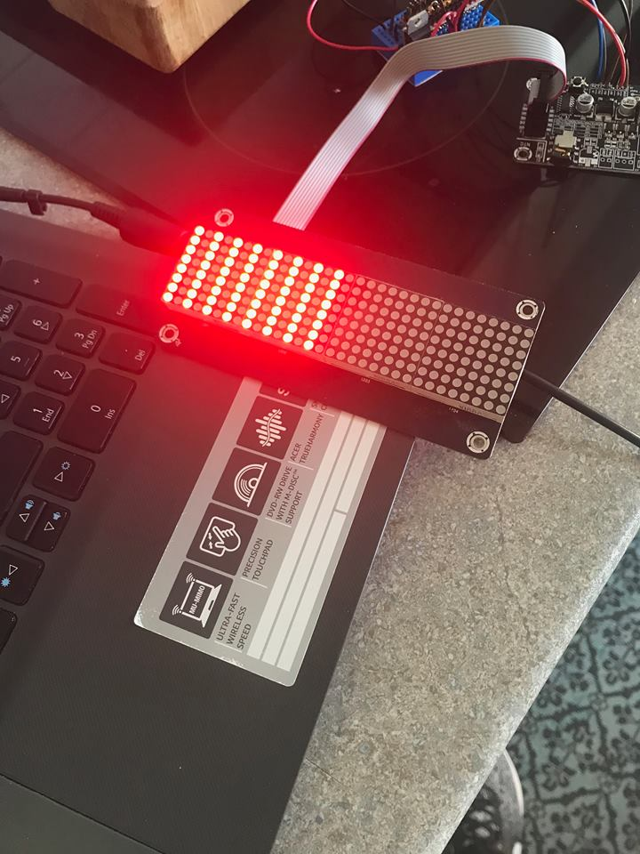

Ik ben Tjorven de wispelaere, ik ben 19 jaar en ik zit in m'n laatste jaar informaticabeheer op GO! atheneum en leefschool De Tandem in eeklo. ik woon in Adegem en in Eeklo, miijn hobbies zijn: naar de voetbal gaan, gamen, netflix, wielrennen en uitgaan met vrienden.
Tjorven De Wispealere
I am Tjorven de wispelaere, i'm 19 years old and i'm in my last year at GO! atheneum en leefschool De Tandem in eeklo. i live in adegem and in eeklo, my hobbies are: going to football, gaming, watching netflix, cycling and going out with friends.
Tjorven De Wispeleare
Je suis tjorven de wispelaere, j'ai 19 ans et je vais a l'école au GO! atheneum en leefschool De Tandem à eeklo. j'habite à adegem et eeklo, mes hobbies sont le jeux vidéo, regarder netflix, le cyclisme et sortir avec mes amies.
Over de GIP
Mijn gip is een led bord maken. niet alleen dit, maar ook de website die rond het bord staat, de verslagen,.. alles op en rond de website.
Het led bord wordt aangestuurd met een Ardweeny, Ardweeny is het kleine broertje van Arduino en uitstekend geschikt voor kleinere projecten, of grote projecten waarvan de plaats heel klein is.
Dit is een ardweeny, je kan dus zien dat het heel klein is.
Het led bord zal displayen wat er wordt getypt op een toetsenbord. Dat toetsenbord is natuurlijk verbonden met het led bord, deze verbinding is via een PS2 aansluiting. Deze aansluiting is al redelijk gedateerd. In het hedendaagse leven zal je weinig of zelfs geen PS2 aansluitingen meer tegenkomen (bij moderen computers/laptops/desktops/...)
Wat is arduino?
Arduino is een opensource-computerplatform.
Concreet wil dit zeggen dat je via je Arduino je hele project controleert, Arduino is het component waarop alle codering zal worden geschreven.
De Arduino is dus een kleinere versie van een moederbord (zoals in een computer).
Wat is een PS2 aansluiting?
PS2 is een poort voor invoerapparaten als muis en toetsenbord. Zoals gezegd werd dit vroeger veel gebruikt, nu niet meer.
Over de stage
voor de stage
Ik heb er ongelofelijk veel zin in om terug naar londen te gaan, vorig jaar ben ik ook geweest (stage) en het waren de beste 2 weken tot nu toe. Ik heb m'n hart echt verloren in londen en ik verwacht dat dat dit jaar zeker weer het geval zal zijn. Ik maak me totaal geen zorgen bij welk bedrijf ik zal werken of bij welk gastgezin ik zal terechtkomen. Vorig jaar had ik wel zorgen omtrent deze dingen maar dat bleek achteraf totaal niet nodig. Ik hoop terug op een leerrijke ervaring, en ook om nog delen te zien van londen die ik vorig jaar niet heb kunnen zien.
Na de stage
De stage zelf was heel leuk, het weerzien met de oud-collega's (en sommige nieuwe) was zeer hartelijk. op voorhand dacht ik wel dat het goed ging gaan en dat alles wel vlot ging verlopen. achteraf klopte dit ook. het was weer een leerrijke ervaring, ik heb veel nieuwe dingen gezien van Londen zelf. het was weer een periode waarvan ik het jammer vind dat het gedaan is.
Logboek
In het 6de zitten betekend dat je in je laatste jaar zit, het betekend ook dat je een GIP (Geïntegreerde proef) moet doen, moet maken. In de richting InformaticaBeheer betekend dit dat wij iets moeten maken dat met onze richting te maken heeft. Specifiek moeten we een product maken met fysical computing, dit houdt in dat het product wordt bestuurd met een Arduino (of een variant ervan).
Onze eerste opdracht was om 5 voorstellen te doen aan de leerkracht (en tevens onze GIP begeleider). Mijn voorstellen waren niet goed genoeg, of het was te moeilijk, of er was te weinig info te vinden over het product.
In samenspraak met de leekracht ben ik dan voor het Led-bord gegaan. Ondertussen heb ik ook een manuel gerkegen, als ik deze volg zou het geen problemen mogen opleveren (of toch weinig). Voorlopig heb ik nog geen stress voor de GIP zelf, maar dat zal ongetwijfeld nog wel komen. De andere klasgenoten hebben ook leuk producten, en als ik eerlijk ben denk ik wel dat ik het gemmakelijkste heb. Dit wil niet zeggen dat het daarom effectief ook makkelijkst is, maar als ik kijk wat de rest heeft en het vergelijk met wat ik heb denk ik toch dat ik juist ben.
Ik vind dat zeker niet erg of jammer, er is altijd wel uitdaging aan een GIP, zoals al gezegd moet het met Arduino (of een variant ervan) worden bestuurd, Arduino moeten we zelf leren en begrijpen. De uitdaging op zich is dus corresponderdend voor iedereen. Hetgeen moelijker is of kan zijn, de bedrading, het coderen,...
In dit trimester ben ik dus al begonnen met het overlopen van de manuel , kijken hoe moeilijk het effectief zal zijn. Ik ben ook al beginnen nadenke wie ik zou kunnen nodig hebben bij het verwezelijken van mijn product. Ik hoop het meeste zelf te doen maar ik ben realistisch en weet dat ik ongetwijfeld hulp zal nodig hebben, of van de leerkracht, of van externe personen.
Het aankoopbedrag zal rond de 140 euro liggen. Dit wordt -afhankelijk hoe de zaken gaan- gesponserd door de mini-onderneming. Als we genoeg dingen verkopen (websites, 3D grief,...) zou het kunnen dat onze volledige GIP wordt betaald door de onderneming.
1 januari - 15 januari
Op het eind van deze maand hebben we onze GIP verdediging. concreet wil het zeggen dat we moeten weten (van naaldje tot draadje) hoe ons product gaat werken, hoe we het allemaal gaan aanpakken, hoe en waar we het gaan bestellen,...
Verder betekent dit ook dat we onze website helemaal in orde moeten hebben (tot waar we kunnen natuurlijk). dingen over de stage kunnen we nog niet invullen aangezien we nog niet op stage zijn gegaan. Voor de website ga ik in grote lijnen hetzelfde doen als vorig jaar, ik hoop dat ik een vergelijkend resultaat kan neerzetten. Ik onderschat mezelf zeker niet voor deze opdracht, hetgeen ik wel dreig te doen is mezelf te overschatten, zoals deze website nu ook wel aantoont.
Als we kijken naar het grotere plaatje (effectief de volledige GIP) kan en zal dit ongetwijfeld nog problemen veroorzaken. Ik weet van mezelf dat ik me nogal snel overschat, dit is zeker iets om rekening mee te houden.
Wat heb ik nu al gedaan in de vakantie en tijdens de eerste 2 weken van het nieuwe jaar?
Ik heb dus mijn website al voor het grootste deel gemaakt. Over de wie ben ik sectie ben ik zeer tevreden, dat is zoals ik het voor ogen had, en dit is ook goed uitgevoerd geweest. Aan de andere kant zijn er een paar dingen waarvan ik niet tevreden ben, zoals de sectie "over de GIP". De tekst is te kort, wat er precies inkomt weet ik nog niet maar met tijd veranderd dat wel. De foto's die er nu opstaan bij "CV" zou ik graag in tekstvorm hebben. De site heeft amper foto's en dat wil ik zo houden. het is een visie die ik op dit moment heb, misschien dat dit nog veranderd in de toekomst maar dat zien we dan wel.
Eigenlijk alles wat nu foto's zijn zou ik graag in tekstvorm hebben, naar mijn eigen mening gaat dit het mooist en het meest overzchichtelijke zijn. Voor de rest denk ik persoonlijk niet dat er nog veel moet veranderen, natuurlijk moet alles nog up to date worden gehouden. dit doe ik later deze week (en weken) nog. Ik moet ook nog mijn presentatie maken voor de jury, zowel in het Frans als in het Engels als in het Nederlands. Dit zal nog voor de nodige stress zorgen.
15 januari - 22 januari
Deze week heb ik aanpassingen gedaan aan mijn website. De foto's zijn nu in tekstvorm. De wie ben ik pagina is ook meer opgemaakt, de foto's passen nu wel, er staan geen foto's meer die groter zijn. de foto's zelf zijn ook aangepast, het zijn deftige foto's nu. Verder is de site ook iets meer responsive, de dingen die moesten worden aangevuld zijn nu ook grotendeels aangevuld.
Ik ben ook aan het denken om toch met 2 pagina's te werken, de eerste pagina zou dan over het algemeen over de GIP zijn en een heel klein beetje over de stage. de 2de pagina zou dan effectief de stage in detail zijn. Dit zal ongetwijfeld ook gebruiksvriendelijk zijn.
23 januari - 30 januari
Wat is er deze week allemaal veranderd?
Deze week heb ik mijn website verdeelt in 2 sites. De eerste zoals gezegd is een algemene pagina over de GIP en een klein stukje over de stage, de 2de pagina is de stage meer in detail. Ook ben ik bezig geweest met het maken van de presentatie, het vertalen van de teskt naar het Frans en het Engels. Alsook het infoenen van de tekst zodat ik zeker alles zeg wat ik wil zeggen. Verder heb ik nog eens gecontroleerd of alles op de website staat dat er op moet staan. Ik denk dat er alles op staat nu en dat ik klaar ben voor mijn GIP verdediging. Het moeilijkste was het online krijgen van de site, je moet eerst een domeinnaam kopen om dan webruimte te kopen. een grote bedankt aan Dylan om mij daarbij te helpen!
GIP voorstelling
De voorstelling van de GIP zelf ging goed. Wel waren er een paar problemen, niet alles stond op de site, de site zelf was (volgens de jury) niet zo overzichtelijk. De tips die ik gekregen heb is dat ik mijn lettertype moet aanpassen, alsook de kleuren. Mijn Engels ging vlot, alsook mijn Frans (dat lukte). Op bepaalde vragen over mijn product kon ik geen antwoord geven, dat leert me dus dat ik mijn product grondiger moet bestuderen, nu is het wel te laat (voor de jury) maar voor in de toekomst is dit wel een goeie les. Met de gekregen tips ga ik zeker iets doen, al weet ik nog niet wat. Ik ga ze wel opvolgen maar toch wil ik mijn eigen toets eraan blijven geven.
31 januari - 11 maart
Tussen deze periode is er bij mij niet veel meer gebeurd, het is een beetje stil gevallen, ik heb mij veel gefocused op andere dingen (school gerelateerd). Tijdens de krokusvakantie heb ik gewerkt dus dan had ik ook weinig of geen tijd, dan erna heb ik mij toegelegd op m'n studies.
11 maart - 25 maart
S T A G E
26 maart - 15 arpil
Dit was dus de periode tussen de thuis GWP en het einde van de paasvakantie. Ik had dus 3 weken de tijd om alles in orde te brengen voor mijn GIP.
Aanvankelijk verliep alles wel vlot, ik bestelde mijn onderdelen vanaf ik terug was uit Londen, in de 2de week van de paasvakantie kwamen die dan toe. Ik had al mijn onderdelen (dacht ik). Ik begon dus met alles in elkaar te zetten.
Het eerste probleem
Ik moest hem zelf nog in elkaar zetten. Ik
Het eerste grote probleem was dat de Ardweeny in verschillende stukjes kwam.begon eraan met volle moed maar ik had al snel door dat het voornamelijk solderen zou zijn. Dat is uiteindelijk dan ook wel gelukt en ik dacht dat dat het einde was van het solderen, dat was het dus niet.
Eigenlijk is het voornamelijk solderen en is het dan gewoon de code uploaden, dan ben je al bijna klaar.
Het volgende "probleem"
Het volgende "probleem" dat ik had was dat ik maar 1 led bord had besteld in plaats van 3. Dit was niet echt een probleem want het was bewust gedaan, voor 1 simpele reden: de kostprijs van zo 1 led bordje ligt rond de 20 euro. Ikzelf vind dan 60euro voor 3 wel een beetje overdreven.
Ik moest hem zelf nog in elkaar zetten. Ik
Is het moeilijk om van 1 naar 3 borden te gaan?
Neen, helemaal niet, het enigste wat je nodig hebt zijn 2 data kabels. Achteraan het led bord zitten 2 poorten, eentje voor de input, eentje voor de output. Hetgeen er dan eigenlijk moet gebeuren is ze "in serie zetten". In serie zetten is eigenlijk maken dat je 3 borden op elkaar zijn afgestemd, dat een paar woorden op de 1ste verschijnen, een paar op de 2de en dan de rest op de 3de. Dat is gewoon met die 2 kabels op te lossen.
Wat moet er nu nog gebeuren?
Ik moet nu nog zorgen dat de PS2 aansluiting wordt aangesloten, en de code uploaden, normaal zou dit niet veel problemen mogen opleveren en ik verwacht toch dat ik op tijd klaar ben zonder problemen.
16 Arpil- 21 april
Deze week is eigenlijk een beetje stilgevallen. De onderdelen die ik nog nodig had kwamen pas woensdag aan. Daardoor verloor ik wel wat tijd maar ik zie het nog altijd goedkomen.
PS2 aansluiting
Ik had de tip gekregen om een USB aansluiting te gebruiken IPV een PS2. De reden is omdat PS2 nauwelijks nog wordt gebruikt in het dagelijkse leven. Dit is wel moeilijker maar het gaat er veel beter uitzien met een USB aansluiting.
Nog problemen
Het probleem dat ik nu heb is dat het led bord enkel via elektriciteit zal worden aangesloten, het battery pack dat ik bestelde is niet goed genoeg voor het bord. Daarom besliste ik dus om het enkel via elektriciteit te laten werken. Het probleem is nu gewoon dat het geen "anywhere you go" is.
Het negatieve aan al dit is dat het niet volledig de opdracht is die gevraagd werd. Het positieve is dan weer dat het mijn eigen touch is en dat ik het niet letterlijk heb nagemaakt.
Probleem?
Het volgende probleem dat ik op dit moment heb is dat de code niet wil uploaden naar de Ardweeny. Ik krijg constant een foutmelding. De fout zelf zit in de code. Andere code kan worden upgeload zonder problemen. Hoe ik dit ga oplossen tegen zaterdag weet ik echt niet. Ik hoop echt dat het zal werken.
Het is momenteel vrijdag, dat wil zeggen dat het 1 dag voor de opendeurdag is. Ik heb gisteren doorgewerkt tot 22uur met externe hulp. Het probleem is dat ik mijn Ardweeny niet kan connecteren met mijn LED bord. Ik moest een aparte controller kopen om dat probleem te omzeilen (zo stond het gedocumenteerd). Jammer genoeg maak die controller weinig tot niks uit.
Het probleem is dat ik dus een led bord moest bestellen van Sure Electronics, wt ik ook heb gedaan. In de manuel stond er gewoon dat er een moest worden besteld van 32*8/8*32. Ik had er geen rekening mee gehouden dat er verschillen zitten in de Pins op het led bord. Ik heb dus het verkeerde LED bord besteld waardoor mijn fysieke GIP niet kan worden volbracht.
Ik heb dus gisteren nog exterene hulp ingeroepen om het misschien toch nog tot een goed einde te brengen, zonder succes. Deze avond komt er nog iemand om te kijken wat ik ermee kan doen, hij kent er meer van dan mij dus ik hoop dat dat iets oplevert.
Ik heb met de leerkracht gesproken en ook hij weet geen oplossing hiervoor, ik heb gisteren een halfuur gebeld met hem, waarvoor dank trouwens! Ik mag mijn GIP nu virtueel maken, d.w.z. via een online tool mijn GIP maken en kijken of dat wel lukt. Het is niet veel maar het is toch een oplossing.
B R E A K T H R O U G H

Ik ben deze middag tijdens de pauze naar huis geweest om verder te werken aan de GIP. Dit leverde een gek resultaat op, het led bordje werkt eindelijk! Het bord reageert nog niet op het toetsenbord maar het doet toch al iets. Het hele ledbord werkt en ook dat is al een opluchting. Ik had verwacht dat ik morgen (opendeurdag) daar met niks zou staan, maar dat is dus niet het geval.
Helemaal klaar is het dus nog zeker niet maar het is allesinds beter dan niks. Ik had na gisteren zelfs al de meeste hoop voor m'n gip opgegeven. Ook het battery pack dat ik heb besteld werkt, het is dus het verkeerde maar toch het juiste.


 Ik vind dat zeker niet erg of jammer, er is altijd wel uitdaging aan een GIP, zoals al gezegd moet het met Arduino (of een variant ervan) worden bestuurd, Arduino moeten we zelf leren en begrijpen. De uitdaging op zich is dus corresponderdend voor iedereen. Hetgeen moelijker is of kan zijn, de bedrading, het coderen,...
Ik vind dat zeker niet erg of jammer, er is altijd wel uitdaging aan een GIP, zoals al gezegd moet het met Arduino (of een variant ervan) worden bestuurd, Arduino moeten we zelf leren en begrijpen. De uitdaging op zich is dus corresponderdend voor iedereen. Hetgeen moelijker is of kan zijn, de bedrading, het coderen,...
 Neen, helemaal niet, het enigste wat je nodig hebt zijn 2 data kabels. Achteraan het led bord zitten 2 poorten, eentje voor de input, eentje voor de output. Hetgeen er dan eigenlijk moet gebeuren is ze "in serie zetten". In serie zetten is eigenlijk maken dat je 3 borden op elkaar zijn afgestemd, dat een paar woorden op de 1ste verschijnen, een paar op de 2de en dan de rest op de 3de. Dat is gewoon met die 2 kabels op te lossen.
Neen, helemaal niet, het enigste wat je nodig hebt zijn 2 data kabels. Achteraan het led bord zitten 2 poorten, eentje voor de input, eentje voor de output. Hetgeen er dan eigenlijk moet gebeuren is ze "in serie zetten". In serie zetten is eigenlijk maken dat je 3 borden op elkaar zijn afgestemd, dat een paar woorden op de 1ste verschijnen, een paar op de 2de en dan de rest op de 3de. Dat is gewoon met die 2 kabels op te lossen.